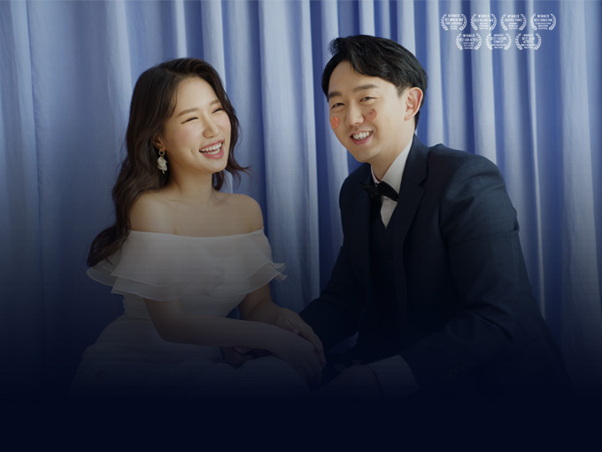

은선 시점
수업이 끝나자마자 바로 옆 극장으로 달려가 보라색 유니폼으로 갈아입던 그녀는 24살이었다.
시대 지난 검은색 뿔테를 끼고, 졸업한 지 꽤 지난 대학교 노트를 구태여 꺼내들어 끄적이는, 옆에서 수업 듣던 오빠가 28살이란다.
24살에게 28살은 위인전에 나올법한 거대한 어른 같았다.
그날도 어김없이 영화관 알바를 하는데
저기 멀리서 술에 잔뜩 취한 28살이 영화표를 한 장 기어이 사더니
팝콘도 무려 즉석구이 오징어 콤보로 주문했다.
검지와 중지 손가락 두 개를 브이로 만들어 그 끄트머리에 카드를 끼어 내미는 모습은, 적어도 파주 탑3안에 드는 금수저의 제스처가 확실했다.
다음날, 미안하다며 온 연락에 미안하면 밥을 사라고 해버리는데..


2020년 6월 27일
지용과 은선의 아주 특별한 결혼식이 찾아옵니다.
- #로맨틱코미디
- #꽁냥꽁냥
- #역대급캐스팅
지용은선 이야기
The Story of Ji-yong and Eun-sun, 2020
- ∙ 절찬상영중
- 예매율 1위
- 전체관람가
- 관람객★★★★★9.99
- 평론가★★★★★9.99
가장 빛나는 청춘에 두 사람이 만나,
뜨겁게 사랑하고,
차갑게 싸우고,
천천히 맞추어가는 사랑의 온도.
지지고 볶고 5년 연애 끝, 결혼 시작!
그리고 어느날, 코로나라는 이름의 새로운 변수가 나타나는데 …
두 사람. 결혼식 잘 마칠 수 있을까?
개 봉 일 : 2020년 06월 27일
상 영 관 : 일산 더테라스웨딩홀
상영시간 : 오전 11시
장 르 : 로맨틱코미디